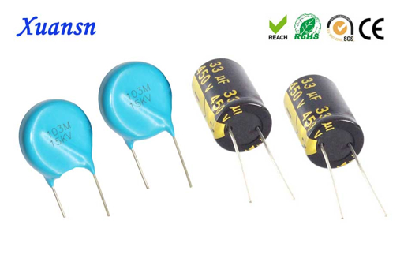
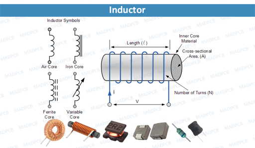

Day 5
Capacitors & RC Timing
Yesterday we steered electricity. Today we learn how to store it and use it to create timing.
- Temporary Batteries: Capacitors store energy in an electric field.
- Filtering: Turning "bumpy" DC into smooth power.
- The Time Constant: Using resistors and capacitors to control speed.
Pro Tip: Capacitors are like water tanks; they can fill up slowly and dump their energy all at once!
The Capacitor (C)
DANGER: Capacitors can hold a charge even when the power is OFF.
Always discharge large capacitors before touching a circuit. They can "bite"!
Key Concepts:
- Farads (F): The unit of capacitance (usually μF or nF).
- Voltage Rating: The maximum pressure the cap can handle before it explodes.
- Electrolytic: These are polarized (+ and -). If you put them in backward, they pop!

Electrolytic (Can) vs Ceramic (Disc)
The RC Time Constant
τ = R × C
How it works:
A Resistor limits how fast a Capacitor can fill up. This creates a predictable delay.
- High Resistance = Slower charge.
- High Capacitance = Slower charge.
- 5 Tau Rule: It takes roughly 5 time constants to fully charge/discharge.
Inductors (L)
The "Mirror Image" of a capacitor. While caps store energy in an Electric Field, Inductors store it in a Magnetic Field.
Characteristics:
- Measured in Henries (H).
- They resist sudden changes in Current.
- Commonly used in filters and power conversion.

Simple coils of wire create magnetism.
Repair Skills: Inspecting Failed Caps
Capacitors are the #1 cause of failure in modern electronics.
Visual Red Flags:
- Bulging: The top "X" or "K" vent is puffed up.
- Leaking: Crusty brown/white fluid at the base.
- Heat: Discoloration on the PCB around the cap.
Troubleshooting Step:
Use your DMM in "Capacitance Mode" to see if the value matches the label. If a 1000μF cap reads 200μF, it’s dead.
Lab 5: The LED Fade-Off
OBJECTIVE: Build an RC circuit that keeps an LED lit after the button is released.
- Place a large Electrolytic Cap (470μF+) in parallel with an LED circuit.
- Press the button to "charge" the tank.
- Release the button and observe the "fade out."
The Challenge:
Swap the resistor for a higher value. Does the LED stay on longer or shorter? Why?
Week 1 Complete
Fundamentals Mastered
- Safety: You know how to respect the bench.
- Ohm's Law: You can calculate the "Big Three" (V, I, R).
- DMM: You can measure continuity, voltage, and components.
- Diodes/Caps: You understand direction and storage.
Next Week: We move to Active Devices—starting with Transistors, the building blocks of all modern computing.